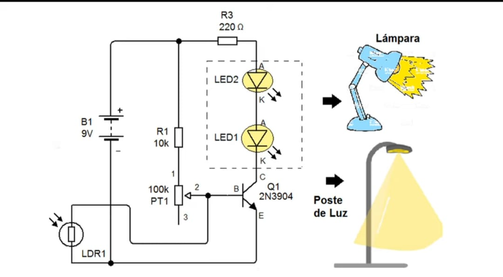
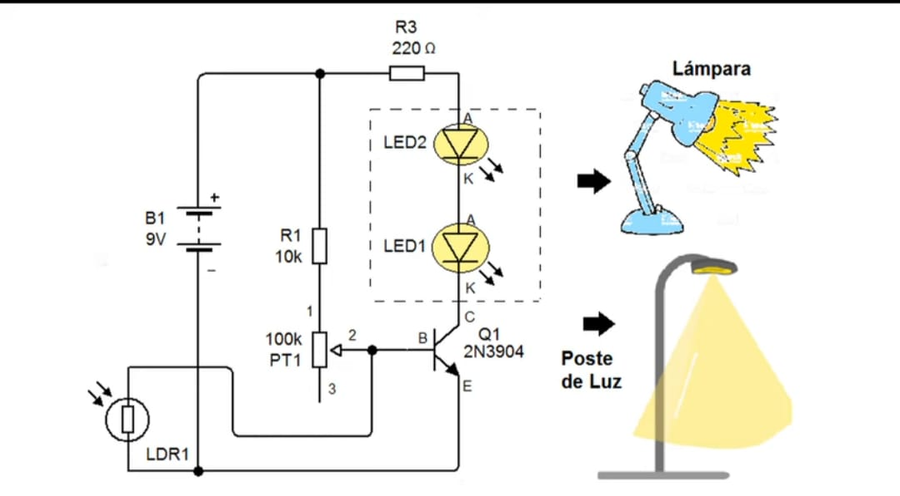

Sistemas Telemáticos
Los sistemas telemáticos integran tecnologías de telecomunicaciones e informática para la transmisión y procesamiento de datos a distancia. Permiten la comunicación entre dispositivos y personas en diferentes ubicaciones geográficas.
Estos sistemas son fundamentales en áreas como telecomunicaciones, informática, automatización industrial, medicina, transporte, entre otros.

Proyectos
Sensor de Humedad

Pantalla LCD
Lancha con arduino
Digrama
Ejemplo

Codigo

Prácticas
Detector de Luz
 

Programacion en Karel
Uso del circuito Integrado
Giroscopio
Codigos de arduino
Codigo 1

Redes Telematicas
Codigo 1

Una Red Informática está formada por un conjunto de ordenadores y dispositivos conectados entre sí con la finalidad de compartir información (datos, imágenes, documentos…) y recursos (impresoras, discos duros…). Una conexión en red puede estar formada sólo por dos ordenadores o adquirir gran complejidad si se conectan a ella miles de dispositivos en todo el mundo, como ocurre en Internet. La Red Telemática se encarga de la transmisión de datos entre sistemas de información basados en ordenadores. En la telemática hay aspectos de las telecomunicaciones y aspectos de la informática. Las telecomunicaciones se encargan de la transmisión de la información y la informática del tratamiento de la misma.